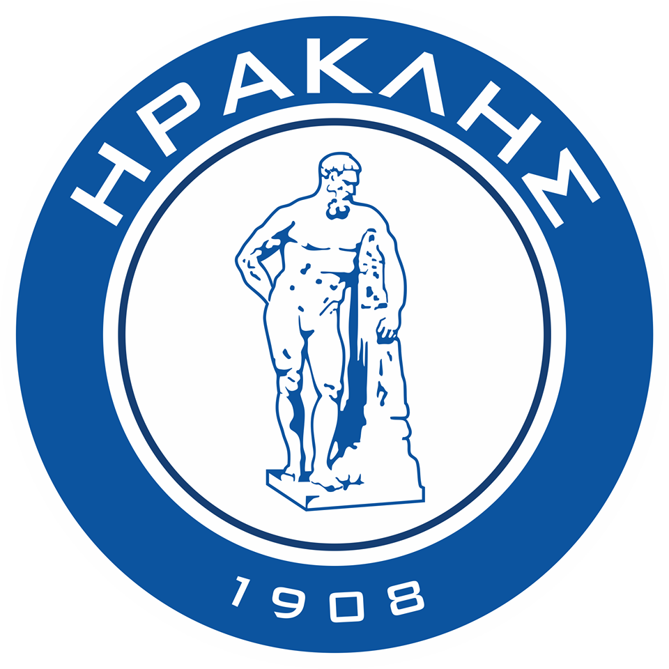

ΠΑΕ ΗΡΑΚΛΗΣ
Ο Ηρακλής Θεσσαλονίκης είναι το πρώτο ποδοσφαιρικό σωματείο που ιδρύθηκε
στη Θεσσαλονίκη και ως έδρα έχει το Εθνικό Καυτανζόγλειο Στάδιο, χωρητικότητας
27.770 θεατών. Τα χρώματα της ομάδας (μπλε και άσπρο) τα δανείστηκε από την
ελληνική σημαία για να δηλώσει την εθνικότητα και το πάθος των μελών του για
την απελευθέρωση της Θεσσαλονίκης. Ιστορικά ο Ηρακλής θεωρείται ως η ομάδα των
"μπαγιάτηδων", δηλαδή των "συντηρητικών" παλαιών Θεσσαλονικέων. Το προσωνύμιο που
τον ακολουθεί είναι Γηραιός. Ιδρύθηκε ως ποδοσφαιρικός σύλλογος το 1908 στη Θεσσαλονίκη
της τότε Οθωμανικής αυτοκρατορίας. Εν συνεχεία αποτέλεσε τμήμα του Γυμναστικού
Συλλόγου Ηρακλή, ενός από τα αρχαιότερα εν ενεργεία αθλητικά σωματεία στην Ελλάδα.
Σιμαντικές στιγμές Ηρακλή
- 1927: Πρωταθλητής Θεσσαλονίκης 1926–27
- 1934: 2η θέση στο πανελλήνιο πρωτάθλημα 1933–34 (ηττήθηκε στον διπλό τελικό από τον πρωταθλητή Νότου Ολυμπιακό)
- 1939: Πρωταθλητής Θεσσαλονίκης 1938–39, 2η θέση στο πανελλήνιο πρωτάθλημα 1938–39 (ηττήθηκε στον διπλό τελικό από την πρωταθλήτρια Νότου ΑΕΚ)
- 1940: Πρωταθλητής Θεσσαλονίκης 1939–40
- 1947: 2η θέση στο πανελλήνιο πρωτάθλημα 1946–47 (με ένα βαθμό διαφορά από
τον Ολυμπιακό λόγω μηδενισμού) και φιναλίστ στο κύπελλο Ελλάδας 1946–47 (ήττα στον τελικό από τον Ολυμπιακό)
- 1951: Πρωταθλητής Θεσσαλονίκης 1950–51
- 1952: Πρωταθλητής Θεσσαλονίκης 1951–5>
- 1957: Φιναλίστ στο κύπελλο Ελλάδας 1956–57 (ήττα στον τελικό από τον Ολυμπιακό)
- 1961: Η πρώτη ελληνική ομάδα που συμμετείχε στο κύπελλο Εκθέσεων (μετέπειτα
κύπελλο ΟΥΕΦΑ, σημερινό Europa League), με αντίπαλο τη γιουγκοσλαβική Νόβι Σαντ.
- 1976: Κυπελλούχος Ελλάδας 1975–76 (νίκη στον τελικό επί του Ολυμπιακού με σκορ 4–4 και 6–5 στα πέναλτι)<
- 1980: Υποβιβασμός στη Β' Εθνική για την υπόθεση του Φιλώτα Πέλλιου παίκτη του ΠΑΟΚ. Αργότερα ο Ηρακλής δικαιώθηκε στα πολιτικά δικαστήρια
- 1980: Φιναλίστ στο κύπελλο Ελλάδας 1979–80 (ήττα στον τελικό από την Καστοριά)
- 1984: 3η θέση στο πρωτάθλημα Α' εθνικής 1983–84
- 1985: Κυπελλούχος Βαλκανίων 1984–85 (επικράτηση στον διπλό τελικό επί της ρουμανικής Άρτζες Πιτέστι, 1–3 εκτός έδρας και 4–1 εντός έδρας)
- 1987: Φιναλίστ στο κύπελλο Ελλάδας 1986–87 (ήττα στον τελικό από τον ΟΦΗ).
- 2011: Υποβιβασμός στη Β' Εθνική λόγω πλαστής ενημερότητας και έπειτα λόγο προσφυγής στο CAS υποβιβασμός στη Δ'
